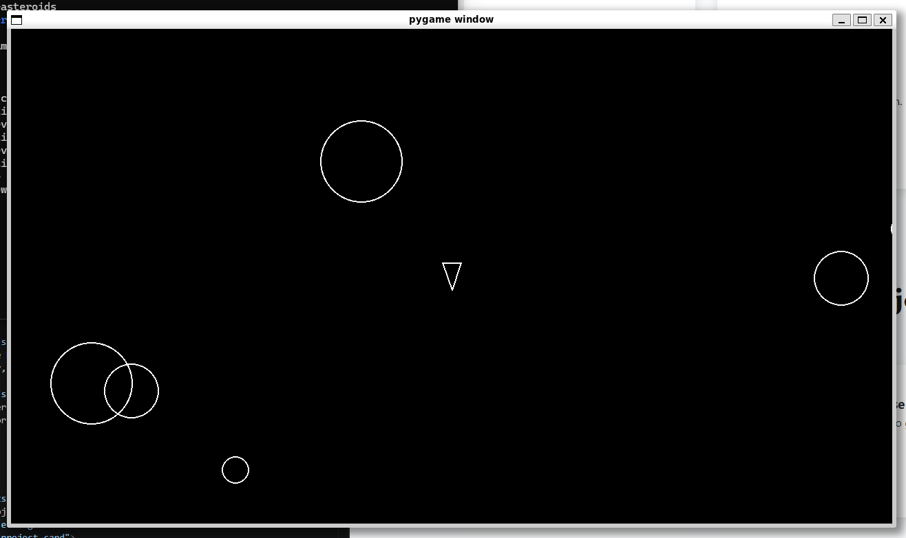

Asteroids Clone
A retro-style arcade game clone built entirely in the command line using Python and the Pygame library. Features classic gameplay mechanics, collision detection, scoring, and simple fragmentation effects.
Tech: Python, Pygame, CLI
View on GitHub